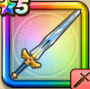

王者の剣
攻略班 7.5点 / きあいためメタル斬り渾身斬り空裂斬ギガソード※錬成で強化可能
くわしい特徴
【レベル別習得スキル】 Lv1【バトルマスター】すばやさ+5 Lv1きあいため（消費MP：5）きあいをためることで次に与える斬撃・体技ダメージが一撃だけ倍になり、必ず攻撃が命中する Lv10メタル斬り（消費MP：6）メタルボディを切り裂く一撃で、メタル系に斬撃ダメージを与える Lv15渾身斬り（消費MP：7）頭上から切りつけ敵1体に威力180%の斬撃ダメージを与える Lv20空裂斬（消費MP：20）空を斬り裂く一撃で、敵全体に威力190％のバギ属性斬撃ダメージを与える Lv30ギガソード（消費MP：23）敵1体に威力350％のデイン属性斬撃ダメージを与え、25％ほどの確率で自分の守備力を1段階アップする Lv35悪魔系へのダメージ+5% Lv40さいだいMP+12 Lv45攻撃時+2%の確率で眠りを与える Lv50攻撃力+12錬成スキル改1悪魔系へのダメージ+10%改2ギガソード改（消費MP：31）敵1体に威力440%のデイン属性斬撃ダメージを与え、まれに守備力を1段階上げる改3伝説のしるし（消費MP：6）戦闘開始時にロトの加護が宿り、受ける呪文ダメージを10%軽減する(効果6ターン)改4錬成ぶき特別演出解放・メガモン討伐結果発表時に特別演出が追加・武器の見た目に特別なエフェクトが追加改5ギガソード改のダメージ+2%改6ギガソード改のダメージ+2%改7ギガソード改のダメージ+3%改8ギガソード改のダメージ+3%改9ギガソード改のダメージ+4%改10ギガソード改のダメージ+6%改11ギガソード改のダメージ+8%改12ギガソード改のダメージ+10%改13ギガソード改のダメージ+12%改14ギガソード改のダメージ+15% 【限界突破スキル】 1凸スキルの斬撃・体技ダメージ+5% 2凸スキルの斬撃・体技ダメージ+5% 3凸スキルの斬撃・体技ダメージ+5% 4凸スキルの斬撃・体技ダメージ+5%